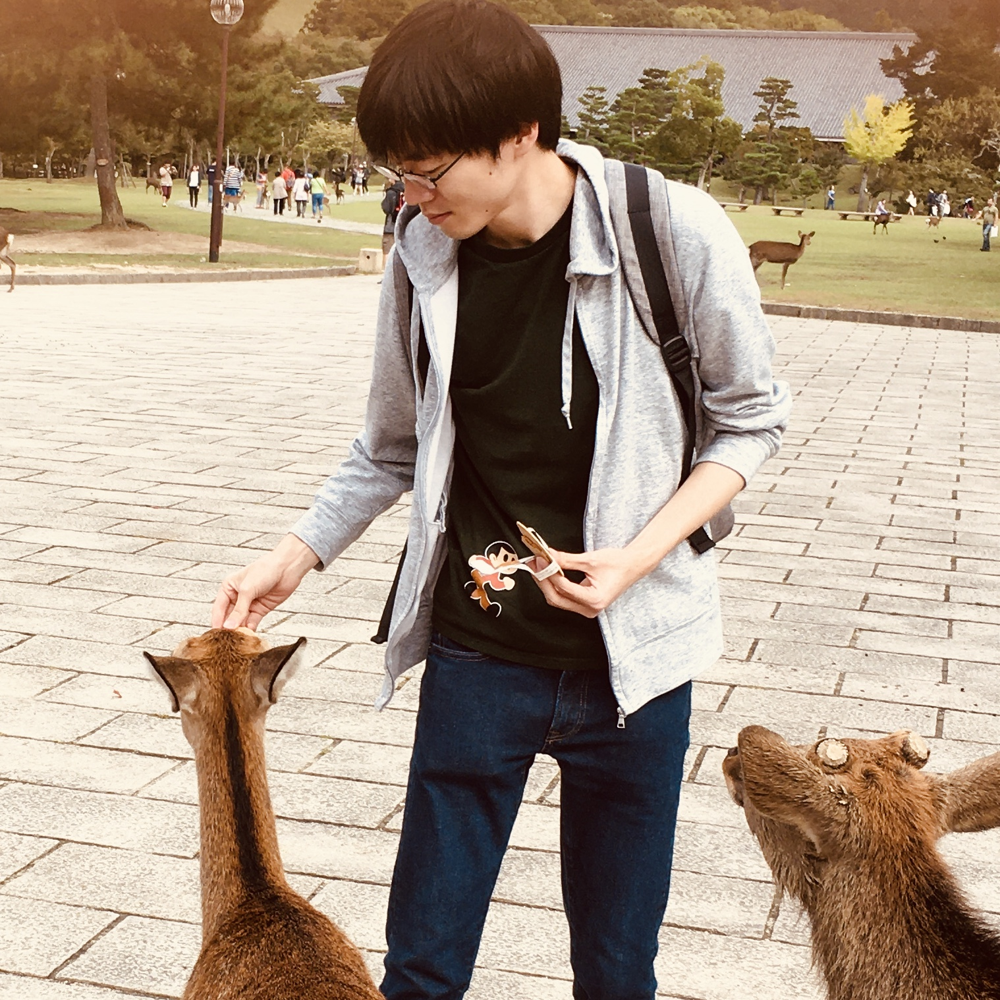

加賀 正樹 / Kaga Masaki / kagasan
インターネットの会社で働いています。インターネットとものづくりとイベントが好きです。
好きが高じてイベントスタッフもします。
シーズン2 : 関東
取り組み（クリックして展開）
- ものづくりイベント
-
ヤフーの学生向けものづくりイベント「Hack U」についてブログを書きました。
— かがさん (@kagasantwi) June 22, 2022
ちょうど夏開催のエントリー期間なので、是非〜🙏。 https://t.co/RimEpZI7eG
-
- ラスタ画像からストロークを出力するやつ
- https://github.com/kagasan/raster2vector
-
— かがさん🍆 (@kaga3twi) March 19, 2022
シーズン1 : 関西
- 2011/04 - 2018/03 大阪府立大学工業高等専門学校
- 2011/04 - 2016/03 本科
- 2016/04 - 2018/03 専攻科
- 2013 - 2017年度 校長顕彰
- 2018/04 - 2020/03 奈良先端科学技術大学院大学
- 先端科学技術研究科 修士(工学)
- 最優秀学生賞
研究したこと（クリックして展開）
学術論文- M. Kaga, T. Kushida, T. Takatani, K. Tanaka, T. Funatomi, Y. Mukaigawa, ``Thermal non-line-of-sight imaging from specular and diffuse reflections'', IPSJ Transactions on Computer Vision and Applications, vol.11, no.8, Nov. 2019.
- M. Kaga, M. Kubota, ``傾き画像に有効な点字認識システムの提案'', 画像の認識・理解シンポジウム(MIRU2017), DS-10, August 2017.
- M. Kaga, T. Kushida, T. Takatani, K. Tanaka, T. Funatomi, Y. Mukaigawa, ``Thermal Non-Line-of-Sight Imaging from Specular and Diffuse Reflections'', 画像の認識・理解シンポジウム(MIRU2019), OS3A-4, July 2019.
プログラミングイベント（クリックして展開）
- 高専プロコン・競技部門
- 2013 本選 出場
- 2014 本選 優勝，NAPROCK First Runner Up Prize，文部科学大臣賞・情報処理学会若手奨励賞・BCN ITジュニア賞 受賞
- 2015 本選 7位，審査員特別賞
- 2016 本選 出場
- 2017 本選 準優勝, NAPROCK First Runner Up Prize
- パソコン甲子園・プログラミング部門
- 2013 本選8位入賞
- U-22プロコン
- 2017 経済産業省商務情報政策局長賞・PCA Dream21賞・さくらインターネット賞・Best Viewers賞
- トラッキングコンペティション
- 2016 3位入賞
- CADDi 2019
- 2019 16位入賞
- ICPC ASIA YOKOHAMA
- 201８ 33位